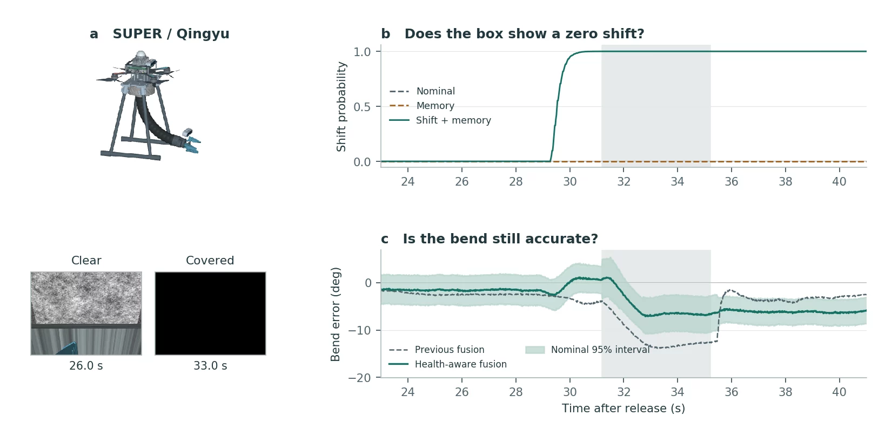
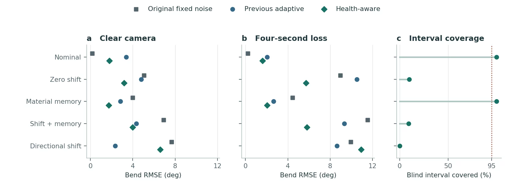

G1 · 应变零偏和回程辨识 / 2026-11-20 00:39（北京时间）
四路应变能区分零点偏移和材料迟滞吗？
三趟新飞行仿真上比较同一腕部视觉配不同应变工况，测量偏移报警、失视弯角误差和误差区间的覆盖率。
大附件单独提供：14 段台架动作与冻结模型、直行轨迹原始证据、左偏轨迹原始证据、右偏轨迹原始证据。
模型与场景

01零点偏移报警与腕部相机失视
同一趟左偏飞行中的机器人、腕部图像、偏移概率和弯角误差。灰带对应 4 秒黑帧。

曲线与机制图

01五种应变工况下的弯角误差与覆盖率
三趟留出轨迹合计评分，包含健康基线胜出的工况和定向偏移反例。

视频回放
01失视前后 18 秒同步回放
观察随实际推力指令渲染的旋翼、视野遮挡、独立虚拟动捕和估计误差范围。
论文与报告
两页组会预览
第 1 页解释感知与训练，第 2 页列出定量结果、反例和下一步的实验。
数据及运行记录
独立台架动作的测试结果
加载、保持、卸载与相同角度的回程读数。
清晰与遮挡的总体评分
8 种估计方法的弯曲量、方向、弯曲向量、有效率及名义区间覆盖。
三趟飞行逐趟评分
可按轨迹、材料回程、采集盒偏移与视觉条件定位。
偏移识别和报警延迟
先对每趟轨迹的灵敏度与特异度取均值，再对轨迹等权平均。
不可辨识反例与因果性检查
核对构造的 35° / 43° 反例、输入时间截断、失视窗口和原始飞行日志。
ORB-SLAM3 跟踪与配准恢复
各次运行的帧数、原地图姿态以及由 RGB-D 关键帧配准回原坐标的结果。
训练和标定冻结记录
独立台架动作标识、代码与输入指纹、模型 SHA-256。
原始数据包清单与指纹
可核对每个压缩包及其成员文件的 SHA-256。
14 段台架动作与冻结模型
独立原始读数、虚拟动捕及冻结权重。
直行轨迹原始证据
原始 ULog、ROS bag、物理状态、传感输入、估计轨迹、选取的原始相机帧及完整 RGB-D 序列指纹。
左偏轨迹原始证据
原始 ULog、ROS bag、物理状态、传感输入、估计轨迹、选取的原始相机帧及完整 RGB-D 序列指纹。
右偏轨迹原始证据
原始 ULog、ROS bag、物理状态、传感输入、估计轨迹、选取的原始相机帧及完整 RGB-D 序列指纹。